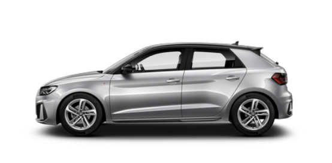
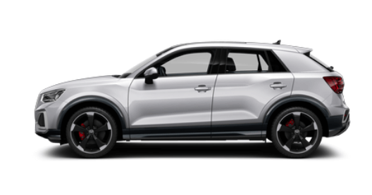
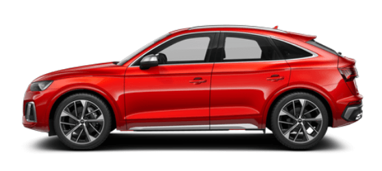
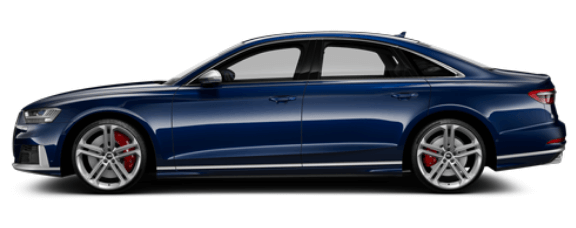

Informe de resultados para medir y evaluar la trayectoria/evolución mensual en base a las principales métricas y KPI´s del negocio.
LEADS TOTALES 1.532
QLEADS 896
% CONVERSIÓN DE LEAD A QLEAD
32%
VOLUMEN DE BÚSQUEDA MARCA EN ZONA
EN EL MES DE ENERO
17.350
Principales modelos:

Audi A1 Sportback1.345

Audi Q2705

Audi SQ5 Sportback505

Audi S8145
GRÁFICO HISTÓRICO DE RESULTADOS
Resumen y conclusiones
El volumen de búsqueda real (9 enero 2021 - 9 febrero 2021) en Madrid en relación a la marca Audi ha sido de 17.350 impresiones.
32.629 impresiones (display) correspondientes a Audi M.Conde en Madrid,referentes a acciones de retargeting.
3.817 impresiones (búsqueda) correspondientes a Audi M.Conde en Madrid, lo que supone el 22% de la búsqueda total de la marca en este territorio geográfico.
93.484 impresiones (redes sociales) correspondientes a Audi M.Conde en Madrid.